Two sets A and B are disjoint if they have no element in common.
Sometimes we need to group n distinct elements into a collection of disjoint sets = {S1, ..., Sk} that may change over time.
Disjoint set data structures are also known as Union-Find data structures, after the two operations in addition to creation. (Applications often involve a mixture of searching for set membership and merging sets.)
Make-Set(x): make a new set Si = {x} (x_ will be its representative)_ and add Si to .
Union(x, y): if x ∈ Sx and y ∈ Sy, then <- − Sx − Sy ∪ {Sx ∪ Sy} (that is, combine the two sets _Sx and Sy)_.
The representative of Sx ∪ Sy is any member of that new set (implementations often use the representative of one of Sx or Sy.)
Destroys Sx and Sy, since the sets must be disjoint (they cannot co- exist with Sx ∪ Sy).
Find-Set(x): return the representative of the set containing x.
We analyze in terms of:
Some facts we can rely on:
Union-Find on disjoint sets is used to find structure in other data structures, such as a graph. We initially assume that all the elements are distinct by putting them in singleton sets, and then we merge sets as we discover the structure by which the elements are related.
Recall from Topic 14 that for a graph G = (V, E), vertices u and v are in the same connected component if and only if there is a path between them.
Here are the algorithms for computing connected components and then for testing whether two items are in the same component:
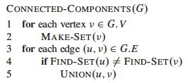 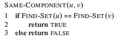
Would that work with a directed graph?
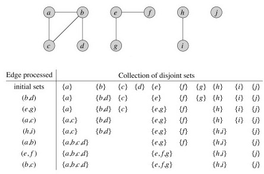 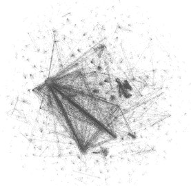
Although it is easy to see the connected components above, the utility of the algorithm becomes more obvious when we deal with large graphs (such as pictured)!
In a static undirected graph, it is faster to run Depth-First Search (exercise 22.3-12), or for static directed graphs the strongly connected components algorithm of Topic 14 (section 22.5), which consists of two DFS. But in some applications edges may be added to the graph. In this case, union-find with disjoint sets is faster than re-running the DFS.
Next week we cover algorithms to find minimum spanning trees of graphs. Kruskal's algorithm will use Union-Find operations.
One might think that lists are the simplest approach, but there is a better approach that is not any more complex: this section is mainly for comparision purposes.
Each set is represented using an unordered singly linked list. The list object has attributes:
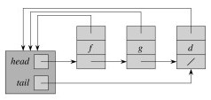
Each object in the list has attributes for:
First try:
head pointer to the representativeFor example, let's take the union of S1 and S2, replacing S1:
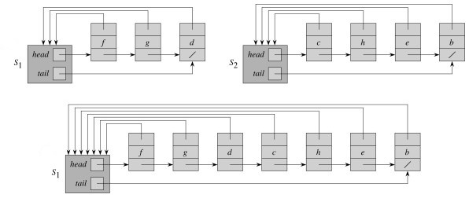
This can be slow for large data sets. For example, suppose we start with n singletons and always happend to append the larger list onto the smaller one in a sequence of merges:
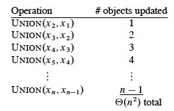
If there are n Make-Sets and n Unions, the amortized time per operation is O(n)!
A weighted-union heuristic speeds things up: always append the smaller list to the larger list (so we update fewer set object pointers). Althought a single union can still take Ω(n) time (e.g., when both sets have n/2 members), a sequence of m operations on n elements takes O(m + n lg n) time.
Sketch of proof: Each Make-Set and Find-Set still takes O(1). Consider how many times each object's set representative pointer must be updated during a sequence of n Union operations. It must be in the smaller set each time, and after each Union the size of this smaller set is at least double the size. So:
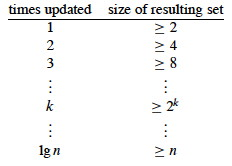
Each representative set for a given element is updated ≤ lg n times, and there are n elements plus m operations. However, we can do better!
The following is a classic representation of Union-Find, due to Tarjan (1975). The set of sets is represented by a forest of trees. The code is as simple as the analysis of runtime is complex.
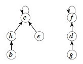
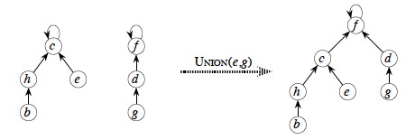
In order to avoid degeneration to linear trees, and achieve amazing amortized performance, these two heuristics are applied:
Union by Rank: make the root of the "smaller" tree a child of the root of the "larger" tree. But rather than size we use rank, an upper bound on the height of each node (stored in the node).
Path Compression: When running Find-Set(x), make all nodes on the path from x to the root direct children of the root. For example, Find-Set(a):
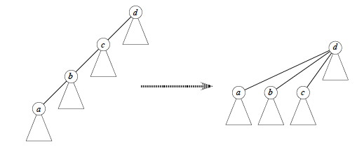
The algorithms are very simple! (But their analysis is complex!) We assume that nodes x and y are tree nodes with the client's element data already initialized.
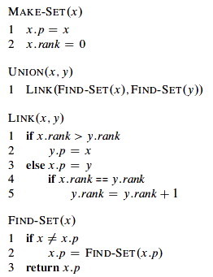
Link implements the union by rank heuristic.
Find-Set implements the path compression heuristic. It makes a recursive pass up the tree to find the path to the root, and as recursion unwinds it updates each node on the path to point directly to the root. (This means it is not tail recursive, but as the analysis shows, the paths are very unlikely to be long.)
The analysis can be found in section 21.4. It is very involved, and I only expect you to know what is discussed below. It is based on a very fast growing function:
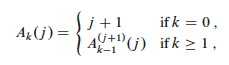
Ak(j) is a variation of Ackerman's Function, which is what you will find in most classic texts on the subject. The function grows so fast that A4(1) = 16512 is much larger than the number of atoms in the observable universe (1080)!
The result uses α(n), a single parameter inverse of Ak(j) defined as the lowest k for which Ak(1) is at least n:
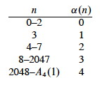
α(n) = min{k : Ak(1) ≥ n}
α(n) grows very slowly, as shown in the table. We are highly unlikely to ever encounter α(n) > 4 (we would need input size much greater than the number of atoms in the universe). Although its growth is strictly larger than a constant, for all practical purposes we can treat α(n) as a constant.
The analysis of section 21.4 shows that the running time is O(m α(n))
for a sequence of m Make-Set, Find-Set and Union operations. Thus for
all practical purposes, the cost of a sequence of m such operations is
O(m), or O(1) amortized cost per operation!
We now return to Graphs. We'll see Union-Find used when we cover minimum spanning trees.
Dan Suthers Last modified: Thu Apr 17 15:35:22 HST 2014
Images are from the instructor's material for Cormen et al. Introduction to
Algorithms, Third Edition.